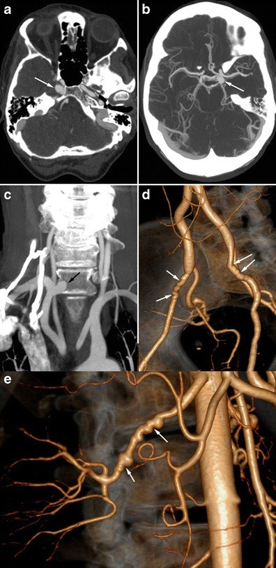
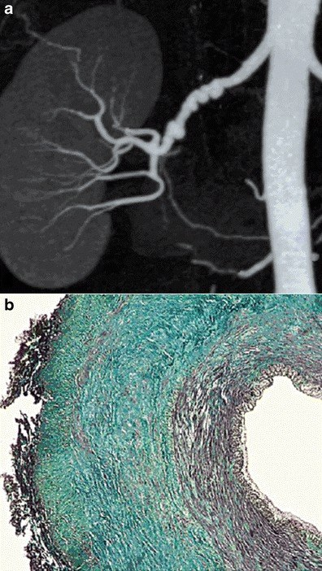
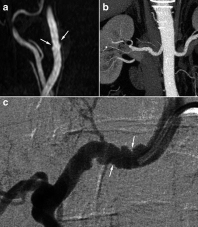
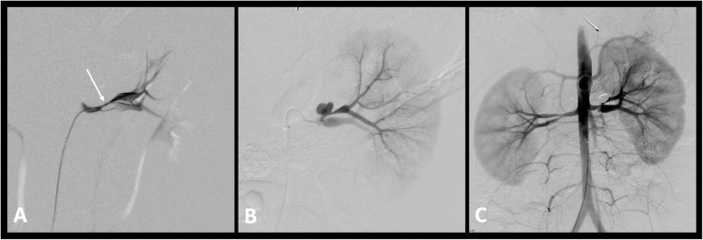
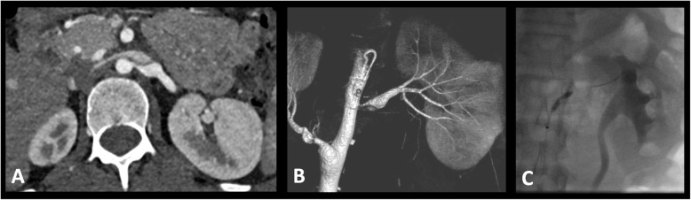
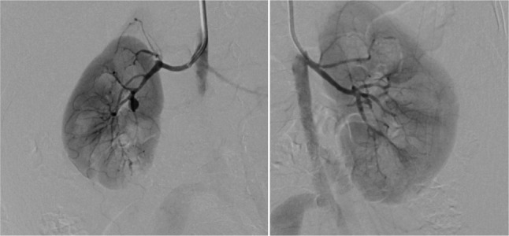

850 — Loạn sản cơ xơ (fibromuscular dysplasia — FMD) toàn thân ở trẻ và người trẻ: chuỗi hạt, phình, bóc tách & khi nào nong bóng / Fibromuscular dysplasia in children and young adults
Tags: pattern:hep-mach pattern:chui-hat pattern:phinh-mach pattern:boc-tach vung:than vung:co-canh score:none protocol:CTA-toan-than
Mức chắc chắn (certainty): tổng hợp y văn (literature synthesis) — ghép 4 nguồn chính: tổng quan hệ thống 119 nghiên cứu về FMD mạch cảnh–não (PMC13100393), bài hình ảnh học FMD của Insights into Imaging (PMC4444794), tổng quan can thiệp tăng huyết áp do mạch thận ở trẻ (PMC7790992) và ca FMD ở trẻ 13 tháng tuổi có hoại tử chi (PMC13371219). Số nào nguồn không đưa thì ghi "chưa rõ".
Câu chốt: FMD không phải bệnh của người lớn nữ 50 tuổi — ở trẻ, FMD không hội chứng là nguyên nhân thường gặp nhất của tăng huyết áp do mạch thận (renovascular hypertension — RVH), và kiểu hình lại khu trú (unifocal) nhiều hơn chuỗi hạt. Điểm quyết định: chẩn đoán FMD = chụp toàn bộ cây mạch từ đầu đến khung chậu MỘT lần để tìm phình/bóc tách không triệu chứng (phình nội sọ 7%, bóc tách mạch cảnh 7–17%, tổn thương ĐMC 10%), rồi nong bóng — không đặt stent ở trẻ đang lớn.
1. Tổng quan bệnh học – cơ chế hình ảnh
1.1 Vì sao mạch "chuỗi hạt" — và vì sao trẻ lại "khu trú" (TẠI SAO)
- Bệnh học: FMD là bệnh động mạch không do xơ vữa, không do viêm: tăng sinh tế bào cơ trơn + chất nền làm dày và biến dạng thành mạch, tạo hẹp, phình, bóc tách hoặc xoắn vặn (định nghĩa đồng thuận quốc tế 2019, dẫn qua PMC7790992). Tổn thương hay gặp nhất: động mạch thận (renal artery), động mạch cảnh trong/đốt sống, động mạch mạc treo và ĐMC bụng.
- Vì sao "chuỗi hạt" (string of beads): thể loạn sản cơ lớp giữa (medial fibroplasia) tạo các dải xơ vòng (fibrous ridges) xen kẽ vùng thành mỏng → trên CTA/MRA/DSA thấy các đoạn giãn xen kẽ các đoạn hẹp, bờ lượn sóng không đều, đường kính lớn hơn khẩu kính bình thường ở chỗ giãn. Đây là lý do chuỗi hạt không phải hẹp đơn thuần: chỗ "giãn" đã là phình nhỏ mất lớp cơ → dễ bóc tách.
- Vì sao trẻ khác người lớn: ở trẻ hẹp khu trú (unifocal/focal) chiếm ưu thế hơn thể đa ổ, và hình chuỗi hạt kinh điển ít gặp (PMC7790992). Hệ quả thực hành: không loại trừ FMD chỉ vì không thấy chuỗi hạt; hẹp khu trú, trơn, ở thân hoặc nhánh động mạch thận ở trẻ vẫn là FMD cho đến khi chứng minh khác.
- Vì sao hẹp → tăng huyết áp: hẹp làm giảm áp lực tưới máu thận → thận tiết renin (cơ chế renin–angiotensin) → tăng huyết áp thường nặng, kháng trị, có thể thành cơn tăng huyết áp. Hẹp hai bên 24–78% trong các loạt nhi (PMC7790992) → phải chụp cả hai bên, không chỉ bên có triệu chứng.
- Vì sao bóc tách/phình lại hay đi kèm: dải xơ + mất cơ trơn + dòng xoáy ở chỗ giãn tạo điểm yếu thành mạch. Trong FMD, bóc tách mạch cảnh 13,9% (ARCADIA, 65/469) và liên quan ≥ 3 vùng mạch làm tăng nguy cơ bóc tách (OR 2,49) (PMC8483547); phình nội sọ 7%, bóc tách mạch cảnh 7–17% (PMC13100393).
- Vì sao "không do viêm" quan trọng trên hình ảnh: không có dày thành mạch đối xứng, thâm nhiễm quanh mạch hay bắt thuốc thành mạch như Takayasu — tổn thương FMD khu trú vào lớp thành, mạch xung quanh sạch. Đây là chốt phân biệt với viêm mạch (mục 3).
1.2 Ngưỡng định lượng nằm lòng (bắt buộc nhớ)
| Chỉ số | Con số | Nguồn |
|---|---|---|
| Tỷ lệ FMD ở động mạch thận (loạt chụp mạch) | 4–6% | PMC4444794 |
| Tỷ lệ FMD mạch cảnh–não (loạt chụp mạch) | 0,3–3% | PMC4444794 |
| FMD thận có triệu chứng | ~4/1000 | PMC1899482 |
| RVH trong tăng huyết áp ở trẻ | 5–25% | PMC7790992 |
| Hẹp động mạch thận hai bên ở loạt nhi | 24–78% | PMC7790992 |
| Chụp mạch ở trẻ: tổn thương hai bên hoặc nhánh trong thận | thường gặp — lý do DSA vẫn là chuẩn vàng | PMC7790992 |
| Bóc tách mạch cảnh trong FMD (ARCADIA 469 BN) | 13,9% (65/469); nam OR 2,66 (1,34–5,25); ≥ 3 vùng mạch OR 2,49 (1,15–5,40) | PMC8483547 |
| Bóc tách mạch cảnh trong FMD (tổng quan 119 nghiên cứu) | 7–17% | PMC13100393 |
| Phình động mạch nội sọ trong FMD | 7% | PMC13100393 |
| Đột quỵ thiếu máu / TIA / SAH / ICH do FMD mạch cảnh–não | 7–10% / 5–12% / 2–3% / 0,01% | PMC13100393 |
| Đau đầu / ù tai mạch đập khi khởi phát | 8–52% / 17–23% | PMC13100393 |
| Tổn thương ĐMC ở FMD đa ổ (360 BN, chụp đủ ĐMC) | 10,0% (36/360; KTC 95% 7,3–13,5) | PMC13599887 |
| Nong bóng thận ở trẻ: có lợi | 48,5–100% | PMC7790992 |
| Tái hẹp sau nong bóng | 17–41% | PMC7790992 |
| Tái hẹp sau stent so với sau nong bóng | 35,5% vs 17,4% | PMC7790992 |
| Phẫu thuật tái thông (phân tích gộp người lớn) | khỏi bệnh 54% | PMC7790992 |
2. Mẫu hình + chẩn đoán phân biệt theo vị trí (gamut)
Mẫu hình cần nhận ra: trẻ/người trẻ < 40 tuổi (nữ nhiều hơn, nhưng nam vẫn mắc — 16% ARCADIA) có tăng huyết áp nặng/kháng trị, ù tai mạch đập, đau đầu, hoặc đột quỵ/bóc tách ở người không có yếu tố nguy cơ xơ vữa → CTA/MRA thấy hẹp khu trú trơn ở thân/nhánh động mạch thận hoặc chuỗi hạt ở cảnh trong/đốt sống, kèm phình, bóc tách, xoắn vặn.
Gamut theo vị trí (mnemonic "THẬN – CẢNH–ĐỐT SỐNG – TẠNG – CHỦ"):
- THẬN (renal): hay nhất ở trẻ — hẹp thân hoặc nhánh, thường hai bên, hẹp khu trú nhiều hơn chuỗi hạt; gây RVH, teo thận một bên, chênh kích thước thận > 1 cm.
- CẢNH – ĐỐT SỐNG (carotid–vertebral): chuỗi hạt ở đoạn C1 giữa cổ (không phải chỗ phân nhánh như xơ vữa), xoắn vặn (tortuosity), web mạch cảnh, bóc tách; biểu hiện: đau đầu, ù tai mạch đập, TIA, đột quỵ.
- TẠNG (splanchnic): hẹp/phình động mạch mạc treo, lách, gan — thường không triệu chứng, phát hiện khi chụp toàn thân; phình có thể vỡ.
- CHỦ (aorta) – chậu: hẹp eo/tắc đoạn giữa ĐMC bụng (middle aortic syndrome — MAS), phình/giãn ĐMC ngực 10% (PMC13599887), hẹp chậu–đùi gây cách hồi (claudication) ở trẻ — như ca 13 tháng tuổi huyết khối động mạch chậu phải (PMC13371219).
Vì sao phải chụp "head-to-pelvis" một lần: tổn thương đa ổ không triệu chứng là quy luật, không phải ngoại lệ (≥ 3 vùng mạch làm tăng nguy cơ bóc tách, OR 2,49); đồng thuận quốc tế khuyến nghị chụp toàn bộ động mạch từ não đến khung chậu một lần khi đã chẩn đoán FMD (PMC13100393, PMC13458163).

Hình 7 — Nữ 56 tuổi đau đầu không đặc hiệu: (a,b) CTA não: phình động mạch cảnh hai bên phát triển vào xoang hang (mũi tên); (c) dựng MIP các thân mạch trên ĐMC: phình động mạch dưới đòn phải (mũi tên đen); (d) dựng 3D: phình + xoắn vặn động mạch cảnh–đốt sống; (e) phình động mạch thận kèm biến đổi chuỗi hạt. Một bệnh nhân — bốn vùng mạch. Nguồn: PMC4444794, CC BY 4.0.3. Bảng so sánh phân biệt (ma trận đối chiếu)
| Thực thể (entity) | Hình ảnh điển hình | Chốt vào (rule-in) | Chốt loại (rule-out) | Gợi ý xác nhận |
|---|---|---|---|---|
| FMD thể đa ổ (chuỗi hạt) | Chuỗi hẹp–giãn xen kẽ, bờ lượn sóng, đoạn giãn rộng hơn khẩu kính gốc, ở thân/đoạn giữa–xa động mạch thận hoặc C1 cảnh trong | ≥ 2 đoạn giãn xen kẽ hẹp + bờ không đều + bệnh nhân trẻ/nữ + nhiều vùng mạch | Bờ trơn đều, hẹp đơn độc sát gốc (ostial), có canxi hóa → xơ vữa | CTA/MRA toàn thân; DSA xác nhận |
| FMD thể khu trú (unifocal) — phổ biến ở TRẺ | Một đoạn hẹp trơn, hình nón/vai rõ, không chuỗi hạt, thường ở thân hoặc nhánh thận | Trẻ + hẹp trơn không canxi + không dấu viêm + chênh renin | Hẹp sát gốc đối xứng kèm hội chứng NF1 rõ → nghĩ loạn sản do NF1 | DSA + đo gradient; loại trừ viêm mạch |
| Xơ vữa động mạch thận | Hẹp sát gốc (ostial), canxi hóa, mảng không đều, bờ gồ ghề | Tuổi > 50 + ĐTĐ/rối loạn lipid + canxi hóa + tổn thương ĐM vành/chi | Trẻ, không canxi, tổn thương đoạn giữa–xa → không phải xơ vữa | CTA (canxi), siêu âm Doppler (vận tốc) |
| Takayasu (viêm mạch chủ) | Hẹp trơn, dài, thuôn dần, thành mạch dày đối xứng, bắt thuốc, ĐMC và các nhánh gốc; có thể tắc hoàn toàn | Dày thành mạch + bắt thuốc thành + CRP/VS tăng + tuổi trẻ nữ châu Á | Thành mạch không dày, không bắt thuốc, tổn thương khu trú từng đoạn → FMD | MRI thành mạch + CRP/VS; PET-CT khi nghi |
| Loạn sản do NF1 | Hẹp sát gốc, trơn, ngắn, thường một bên; kèm MAS | Café-au-lait, u sợi thần kinh, đốm Freckling + hẹp gốc | Không có dấu da/NF1 và tổn thương đoạn giữa–xa → FMD không hội chứng | Khám da, tiền sử gia đình, MRI |
| Hội chứng Williams / Alagille | Hẹp động mạch thận + hẹp van ĐMC trên van (Williams) hoặc MAS + thiểu sản đường mật (Alagille) | Đặc điểm mặt, tăng canxi máu ở nhũ nhi (Williams); vàng da ứ mật + trục động mạch phổi hẹp (Alagille) | Không có bất thường van ĐMC/đường mật → FMD đơn thuần | Siêu âm tim, xét nghiệm gan, di truyền |
| Loạn sản cơ trung mạc từng đoạn (segmental arterial mediolysis — SAM) | Bóc tách/phình động mạch tạng, không có chuỗi hạt, nhiều ổ, có thể tự lành | Phình/bóc tách tạng ở người trung niên + không hẹp chuỗi hạt | Có chuỗi hạt/hẹp điển hình + nhiều vùng mạch → FMD | CTA lặp 3–6 tháng |
| Co thắt mạch não có hồi phục (RCVS) | Co thắt lan tỏa, nhiều đoạn "dạng xúc xích", hồi phục sau vài tuần | Đau đầu sét đánh tái diễn + co thắt đa ổ + hồi phục trên chụp lặp | Tổn thương cố định trên chụp lặp + có chuỗi hạt thật → FMD | Chụp lặp 4–6 tuần |
| Sóng đứng (standing/stationary waves) | Sóng đều đặn, chu kỳ giống nhau, ở đoạn thẳng mạch, mất khi bơm mạnh/dùng thuốc giãn mạch | Chu kỳ đều + đổi theo áp lực bơm | Bờ không đều, chu kỳ khác nhau, tồn tại sau giãn mạch → FMD thật | Lặp DSA sau giãn mạch; đối chiếu CTA |

Hình 2 — (a) CTA thận mặt phẳng vành, dựng MIP: chuỗi hạt điển hình ở động mạch thận phải, các đoạn giãn xen kẽ hẹp. (b) Tiêu bản màu: xơ hóa lan rộng lớp giữa (medial fibrosis) — cơ sở giải phẫu của hình ảnh; nội mạc và ngoại mạc bình thường. Nguồn: Varennes L et al., Insights Imaging 2015 (PMC4444794), CC BY 4.0 — nguyên bản, không crop.
Hình 6 — Nam 62 tuổi tăng huyết áp: (a) MRA dựng MIP: chuỗi hạt kín đáo ở động mạch cảnh trong (mũi tên trắng); (b) CTA thận cùng bệnh nhân: chuỗi hạt rõ ở động mạch thận. (c) DSA xác nhận. Đây là lý do phải chụp toàn thân: tổn thương ở vùng thứ hai có thể kín đáo hơn vùng đang triệu chứng. Nguồn: cùng bài (PMC4444794), CC BY 4.0.4. Protocol chụp + hệ phân độ & chiến lược xử trí
Chụp gì (thứ tự leo thang):
- CTA (hoặc MRA nếu trẻ cần tránh bức xạ) từ đầu đến khung chậu, lát mỏng ≤ 1 mm, dựng MIP + 3D VR: đánh giá cả hai động mạch thận đến nhánh trong thận, cảnh trong/đốt sống, tạng, ĐMC. CTA ưu thế khi cần canxi hóa, stent, xương; MRA ưu thế ở trẻ nhỏ/người trẻ cần theo dõi lặp.
- DSA vẫn là chuẩn vàng — đặc biệt ở trẻ, vì tổn thương hay ở nhánh trong thận mà CTA/MRA bỏ sót; DSA cho phép đo gradient áp lực qua chỗ hẹp ngay trên bàn và nong bóng cùng lúc (PMC7790992).
- Siêu âm Doppler là bước sàng lọc (chênh kích thước thận, vận tốc dòng, parvus–tardus), không đủ loại trừ FMD ở trẻ — chụp mạch vẫn cần khi lâm sàng nghi (PMC7790992).
- IVUS/OCT giúp xem thành mạch và kết quả nong, nhưng chưa được chuẩn hóa ở trẻ — không dùng để quyết định một mình.
- Chụp lặp: sau nong bóng 6–12 tháng rồi hằng năm; khi có bóc tách/phình chụp lặp 3–6 tháng cho tới khi ổn định.

Hình 6 — (a) Chụp mạch thận trái: phân nhánh sớm với hẹp dài, chít hẹp cả hai nhánh (mũi tên). (b,c) Chụp lại 2 tháng sau nong bóng: giả phình tại chỗ nong nhánh trên (mũi tên), điều trị thành công bằng coil. Đây là biến chứng phải khám lại sau nong: đau hông lưng + giảm hemoglobin sau thủ thuật. Nguồn: Patel PA, Cahill AM, CVIR Endovasc 2021 (PMC7790992), CC BY 4.0.Ngưỡng & quyết định can thiệp (số nằm lòng):
- Nong bóng (percutaneous transluminal angioplasty — PTA) có lợi 48,5–100%, tái hẹp 17–41% → chấp nhận nong lặp lại thay vì stent (PMC7790992).
- Tránh stent ở trẻ đang lớn: stent không lớn theo trẻ → thành chỗ hẹp cố định; tái hẹp sau stent 35,5% vs 17,4% sau nong bóng (PMC7790992). Chỉ đặt stent khi cần cứu nguy cấp (bóc tách gây thiếu máu, vỡ phình).
- Phẫu thuật tái thông (ghép, bypass, tái tạo) khi nong thất bại nhiều lần, tổn thương nhánh xa/kéo dài, hoặc MAS phức tạp; phân tích gộp người lớn: khỏi bệnh 54% — nhỉnh hơn nong đơn thuần nhưng xâm lấn hơn (PMC7790992).
- Điều trị nội khoa song song: kiểm soát huyết áp chặt (thuốc chẹn men chuyển/chẹn thụ thể là lựa chọn hợp lý khi hẹp một bên; thận trọng khi hẹp hai bên), statine không chỉ định thường quy vì không phải bệnh xơ vữa, ngừng thuốc lá, và kháng kết tập tiểu cầu hợp lý cho FMD mạch cảnh–não để giảm nguy cơ huyết khối (PMC13458163, PMC13100393).
- Phình nội sọ: can thiệp khi có yếu tố nguy cơ vỡ (kích thước, vị trí, tăng theo thời gian) hoặc thiếu máu não tái diễn dù đã điều trị (PMC13100393).
flowchart TD
A[Trẻ/người trẻ tăng huyết áp kháng trị, ù tai mạch đập hoặc bóc tách] --> B[CTA hoặc MRA đầu–khung chậu, lát ≤ 1 mm]
B --> C{Hẹp khu trú hay chuỗi hạt?}
C -->|Không thấy tổn thương nhưng lâm sàng mạnh| D[DSA + đo gradient: nhánh trong thận dễ bỏ sót]
C -->|Có| E[Chẩn đoán FMD]
E --> F[Chụp toàn thân MỘT lần: tìm phình, bóc tách, MAS, tổn thương tạng]
F --> G{Tăng huyết áp kháng trị hoặc thiếu máu cơ quan?}
G -->|Không| H[Điều trị nội khoa + theo dõi 6–12 tháng]
G -->|Có| I[Nong bóng, đo gradient; lặp lại nếu tái hẹp]
I --> J[Theo dõi 6–12 tháng rồi hằng năm; stent chỉ khi cứu nguy]
F --> K{Phình nội sọ hoặc bóc tách?}
K -->|Có| L[Đánh giá can thiệp theo nguy cơ vỡ/thiếu máu + kháng kết tập tiểu cầu]
K -->|Không| H

Hình 1 — (A) CTA ngang: hẹp động mạch thận trái kèm giãn sau hẹp. (B) Chụp mạch quay (rotational angiography) xác nhận. (C) Eo bóng (balloon waist) tại chỗ hẹp khi bơm — dấu hiệu tổn thương xơ chịu lực, và là mốc để nong tăng dần. Nguồn: Patel PA, Cahill AM, CVIR Endovasc 2021 (PMC7790992), CC BY 4.0.5. Biến thể bình thường và cạm bẫy
- Cạm bẫy 1 — "không có chuỗi hạt = không phải FMD": ở trẻ, hẹp khu trú trơn là kiểu hình chính và chuỗi hạt kinh điển ít gặp (PMC7790992). Bỏ sót ở đây = trẻ tăng huyết áp nhiều năm, teo thận.
- Cạm bẫy 2 — sóng đứng (standing waves) giả chuỗi hạt: sóng đều chu kỳ, ở đoạn mạch thẳng, mất khi bơm mạnh hoặc sau thuốc giãn mạch; chuỗi hạt FMD không đều và tồn tại. Nếu nghi, lặp DSA sau giãn mạch.
- Cạm bẫy 3 — gán hẹp sát gốc cho FMD: hẹp ostial đối xứng ở trẻ gợi NF1 (nguyên nhân hẹp mạch thận thường gặp thứ hai ở trẻ phương Tây, PMC7790992); ở người lớn là xơ vữa. Vị trí + tuổi + dấu da quyết định.
- Cạm bẫy 4 — chỉ chụp vùng có triệu chứng: 10% FMD đa ổ có tổn thương ĐMC, 7% có phình nội sọ, 7–17% bóc tách mạch cảnh — tất cả có thể im lặng (PMC13599887, PMC13100393). Chụp toàn thân một lần là tiêu chuẩn.
- Cạm bẫy 5 — đặt stent "cho chắc" ở trẻ: stent chặn sự lớn của mạch, tái hẹp 35,5% vs 17,4%; ưu tiên nong lặp (PMC7790992).
- Cạm bẫy 6 — quên thận khi đã thấy tổn thương cảnh: FMD là bệnh toàn thân; hình 6 cho thấy cùng bệnh nhân có cả hai ổ, và vùng kín đáo hơn lại là vùng không triệu chứng.
- Cạm bẫy 7 — web mạch cảnh đọc thành "hẹp xơ vữa": web là màng nội mạc khu trú ở mặt sau–bên hành cảnh, là một dạng FMD, chiếm ưu thế ở người da đen (PMC13100393); xử trí thiên về can thiệp/kháng kết tập chứ không phải statine.
- Biến thể bình thường: xoắn vặn nhẹ động mạch cảnh trong ở người trẻ không triệu chứng, giãn nhẹ động mạch thận không kèm hẹp — theo dõi, không can thiệp.
6. Tự lượng giá — Blind Quiz ngay trên trang tĩnh
Ca 1 — Trẻ 13 tháng tuổi, chân phải tím–đau, mất mạch mu chân. Siêu âm không có tín hiệu Doppler. Chụp mạch thận chọn lọc:

- Câu hỏi: (1) Mô tả bất thường ở hai động mạch thận. (2) Vì sao trẻ 13 tháng tuổi lại có huyết khối động mạch chậu và phình động mạch mạc treo? (3) Chẩn đoán mô bệnh nào xác nhận?
Bấm để hiện đáp án (findings + chẩn đoán)
- Findings: hai động mạch thận mất tính chất đều đặn, bờ lượn sóng dạng chuỗi hạt (beaded) — hẹp–giãn xen kẽ lan tỏa. Trước đó CT cho thấy tắc hoàn toàn động mạch chậu chung phải và giãn phình động mạch mạc treo trên/dưới.
- Chẩn đoán: FMD thể nặng ở trẻ nhỏ, biểu hiện bằng huyết khối–thiếu máu chi cấp (phải cắt cụt) và phình mạch tạng; tăng huyết áp do mạch thận xuất hiện trong lúc gây mê (cơn tăng huyết áp do mạch thận).
- Vì sao: thành mạch loạn sản + dòng xoáy ở đoạn giãn → huyết khối tại chỗ và phình; trẻ nhỏ có thể biểu hiện bằng biến cố mạch máu, không chỉ tăng huyết áp.
- Mô bệnh: bệnh lý động mạch lan rộng phù hợp FMD trên bệnh phẩm chi cắt cụt.
- Nguồn ảnh: Louiselle A et al., BMC Pediatr 2026 (PMC13371219), CC BY-NC-ND 4.0 — nguyên bản, không crop.
Ca 2 — Nam 42 tuổi, đột ngột nói khó và yếu nửa người phải, trong cửa sổ tiêu sợi huyết. CTA cổ–não:
- Câu hỏi: (1) Dấu hiệu ở động mạch cảnh trong (ảnh a) là gì, và vì sao nó không giống xơ vữa? (2) Ảnh b và c cho thêm thông tin gì buộc phải chụp thêm? (3) Có nên đặt stent "phòng ngừa" đoạn chuỗi hạt không?
Bấm để hiện đáp án (findings + chẩn đoán)
- Findings: (a) MRA MIP động mạch cảnh trong: các đoạn hẹp–giãn xen kẽ kín đáo ở đoạn giữa cổ (mũi tên trắng) — chuỗi hạt, bờ không đều, không ở chỗ phân nhánh (khác xơ vữa). (b) CTA thận cùng bệnh nhân: chuỗi hạt rõ ở động mạch thận. (c) DSA xác nhận cả hai.
- Chẩn đoán: FMD đa ổ (cảnh + thận) — cần chụp đầu–khung chậu một lần để tìm thêm phình/bóc tách.
- Không đặt stent "phòng ngừa": tổn thương FMD ở người trưởng thành thường lành tính về hẹp, điều trị chính là kháng kết tập tiểu cầu + kiểm soát huyết áp; can thiệp chỉ khi thiếu máu não tái diễn dù đã điều trị nội khoa (PMC13100393). Stent ở đoạn chuỗi hạt dễ gây tái hẹp.
- Nguồn ảnh: Varennes L et al., Insights Imaging 2015 (PMC4444794), CC BY 4.0.
Ca 3 — Tính toán: bé gái 9 tuổi tăng huyết áp kháng trị, CTA phát hiện hẹp khu trú động mạch thận phải; nong bóng lần 1 tốt, 8 tháng sau huyết áp tăng lại, DSA cho tái hẹp 60%.
- Câu hỏi: (1) Tỷ lệ tái hẹp sau nong bóng là bao nhiêu? (2) Nên nong lại hay đặt stent? (3) Theo dõi tiếp thế nào?
Bấm để hiện đáp án (findings + chẩn đoán)
- Tái hẹp sau nong bóng: 17–41% (PMC7790992) — lần tái hẹp này nằm trong dự kiến, không phải thất bại kỹ thuật.
- Nong lại, không stent: tái hẹp sau stent 35,5% vs 17,4% sau nong bóng, và stent không lớn theo trẻ — nong lặp giúp mạch tái tạo lớn dần (PMC7790992). Stent chỉ khi cấp cứu (bóc tách/thiếu máu) hoặc nong thất bại nhiều lần.
- Theo dõi: chụp mạch/CTA lặp 6–12 tháng rồi hằng năm; kiểm soát huyết áp, tầm soát bên đối diện (hẹp hai bên 24–78%) và các vùng khác (ĐMC 10%).
- Nguồn số liệu: PMC7790992; điều trị nội khoa: PMC13458163.
Bài liên quan chéo
- 685 – Theo dõi dài hạn sau bóc tách động mạch cổ ở trẻ
- 247 – Bóc tách động mạch cảnh–đốt sống
- 248 – Can thiệp nội mạch giả phình/bóc tách động mạch cảnh–đốt sống
- 249 – Rò động mạch cảnh–xoang hang sau chấn thương
- 207 – Phình mạch nội sọ chưa vỡ: nguy cơ vỡ & chỉ định can thiệp
- 652 – Đột quỵ mạch máu não ở trẻ: moyamoya & viêm mạch
- 172 – Theo dõi sau can thiệp bóc tách ĐMC bụng (EVAR/TEVAR)
- 800 – Tổng quan hệ Tim mạch
Ảnh
850_renal-string-of-beads_CTA-MIP_PMC4444794-Fig2.jpg— Varennes L et al., Insights Imaging 2015 (PMC4444794), CC BY 4.0.850_dong-thoi-co-canh-than_MRA-CTA_PMC4444794-Fig6.jpg— cùng bài, CC BY 4.0.850_phinh-dong-thoi-nhieu-noi_CTA_PMC4444794-Fig7.jpg— cùng bài, CC BY 4.0.850_hep-dong-mach-than-nong-bong_CVIT_PMC7790992-Fig1.jpg— Patel PA, Cahill AM, CVIR Endovasc 2021 (PMC7790992), CC BY 4.0.850_gia-phinh-sau-nong-bong_CVIT_PMC7790992-Fig6.jpg— cùng bài, CC BY 4.0.850_dong-mach-than-tre-13-thang_DSA_PMC13371219-Fig3.jpg— Louiselle A et al., BMC Pediatr 2026 (PMC13371219), CC BY-NC-ND 4.0.- Chi tiết nguồn/giấy phép từng ảnh:
images/CREDITS.md.
Không dùng để chẩn đoán độc lập khi chưa có người hướng dẫn.